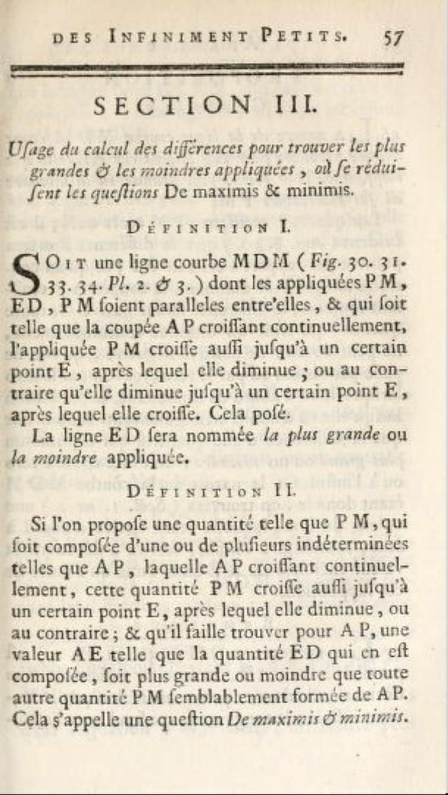
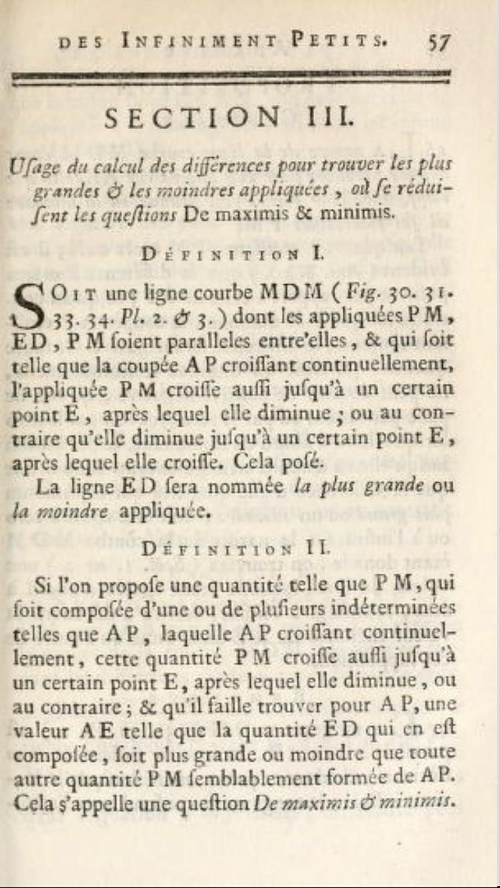

Objectives
- Understand that optimization techniques in calculus are aimed at functions whose output is a scalar but that often it is desired to “optimize” over a vector output or even a function output.
- Recognize two important real-world contexts in which this vector-or-function output applies: a cash-flow stream and a probability distribution for an outcome.
- Be able to employ two widely used approaches for converting vector-or-function outputs into a scalar for the purposes of optimization:
- Net-present value
- Expectation value
Optimization?
There is a calculus problem that has been part of the standard curriculum since Newton’s first work. It appears in Section III of the very first calculus textbook, published in 1696. (English: “Use of the calculus of differences to find the biggest and smallest values, or the reduction of questions De maximis & minimis.” )
 

Source. This is the 1763 edition and is the personal copy of Founding Father and 2nd US President, John Adams.
The calculus perspective on optimization involves functions whose output is a scalar quantity: a single number. The problem of maximization is to find the input(s) to the function that produce the largest possible output from the function and similarly for minimization: that is, to find the argmax or argmin.
An analogous problem, suited for an elementary-school pupil, is to take a deck of cards, each with a number written on it, and find the card that has the largest number on it. In calculus, we substitute for the discrete domain of the deck of individual cards the continuous domain of the number line (or higher dimensional vector space).
With such a long textbook history, there is a large variety of textbook problems written to illustrate the application of optimization to “real-world” situations. For instance, a famous problem is to find the shape of a tin can (mathematically, a cylinder) that contains a given volume using the least amount of metal (mathematically, the smallest surface area).
It’s important to distinguish between the two distantly related problems of optimization and of design. Optimization is about finding the single best scalar output of a function. Design is about finding a configuration that suits the needs of a situation. Generally, design involves evaluating trade-offs among multiple objectives. In optimization, there is only a single objective.
Optimization is a far easier problem than design, but design is a far more widely applicable process. Regrettably, generations of students, having been given only the optimization hammer as a tool have been induced to treat design as a nail. The simple concept of “best” applies well to comparing scalar outputs of a function, but when the output is a vector or another function, one can only meaningfully speak of “best for a specific purpose.”
There are several strategies for transforming design problems into optimization problems, but inevitably something is lost in the process. One process is to consider only one dimension of the output. For example, in selecting the “best” electric car, you might reasonably look at the car’s range. But other criteria are important too, for instance the speed with which the batteries can be recharged or the cost of the vehicle. Throughout your professional life, you will likely encounter situations where the criteria for making a design decision have been reduced unnecessarily to low dimension. For instance, in the history of bomber design the criteria “bigger, higher, faster, farther” have been emphasized (example: B-1 bomber). Taking into consideration other criteria can considerably change the design, as with “stealth” (the B-2 bomber) or suitability to mission (the A-10 for close air support).
There are some situations, however, where there is a strong logical or economic basis for converting a vector/function output into a scalar. This day’s lesson is about two of those methods, one related particularly to finance and the other to outcomes that are uncertain. (Later on, we’ll examine mathematical techniques for dealing with genuine design-related problems.)
Powerball
The Powerball is a weekly lottery famous for its outsized payoff. For instance, for the week of April 7, 2021, the jackpot payout is officially described as $43,000,000. There is a limited sense in which this might be true, but in a far more meaningful sense it is not. The winner has a choice between a one-time cash payout of $29,300,000 or an annuity of 30 annual payments of $1,433,333. However, the winnings are taxable income and the lottery’s administration (a not-for-profit, government benefit organization) withhold applicable federal and state taxes. According to the usmega site, in Colorado the cash payment would amount to $17,161,778 while the annuity would be 30 payments of $873,711.
This will sound silly, but we know the value of $17,161,778 paid today: it is $17,161,778. But what is the value of $873,711 paid out over 30 years? The answer depends on the discount rate, that is, the present value of future money. When the discount rate is \(r\), the current value of money due to be paid in \(n\) years is \(1/(1+r)^n\). For instance, at \(r = 5\%\), the current value of $1000 to be paid 10 years in the future is $599. The table shows the net present value of the $873,711 paid out yearly over 30 years.
| Discount rate | Net Present Value |
|---|---|
| 0 | 26,211,330 |
| 1% | 22,773,963 |
| 2% | 19,959,390 |
| 4% | 15,712,569 |
| 5% | 14,102,634 |
| 8% | 11,600,850 |
| 10% | 9,060,039 |
| 15% | 6,597,284 |
The formula behind this table is \[873711 \sum_{k=0}^{29} (1+r)^{-k}\]
What discount rate to use is a judgement call, and will reasonably depend on a person’s situation. For example, a 90-year old might reasonably discount future money at \(r=20\%\), whereas the discount rate for a person owing money next month to the mafia might be considerably higher.
As a placeholder, we can look to the auctions of inflation-adjusted US Treasury Inflation Protected Securities (TIPS). As of this writing, a TIPS with a nominal payout of $1000 in 30 years is for sale at $100.70 (as of April 6, 2021), corresponding to a discount rate of 8% per year. With some justification, one might assert that the nominal $43,000,000 Powerball prize is really worth about $10 million.
Let’s turn the problem of calculating a net present value into a calculus problem. Rather than summing over the discounted yearly dollar payout, we’ll consider a continuous payout rate in dollars per year.
Here is a sandbox you can use for the calculations needed to answer the following questions.
We’re going to use an effective annual discount rate of 8% in the following problems.
There is a joke that makes sense only to the financially savvy: When the Powerball claims a $1 million payout, they mean $1 per year over a million years. We can do this calculation using numerical evaluation of the definite integral but there is a catastrophic loss of numerical precision for the 1-million year calculation. Instead, do the calculation for a $10/year payout over 100,000 years.
First, answer the following ungraded question with utter honesty.
Finally, and this has nothing to do with net present value per se, try out the calculation of the net present value of $1 per year over a million years. This is worth doing if only to see a compelling example of how far off computer numerics can be when using very large or very small numbers.
A professional will always have at hand some method for checking the reasonableness of an answer in order to detect when something is wrong. For example, here you might look at a sequence of calculations: $100,000 per year over 10 years, $10,000 per year over 100 years, and so on. You would expect the numbers in this sequence to approach some sort of limit as the number of years increases. It does, but as the number of years gets larger that limit goes awry.
Earthquake preparedness
We have records of large earthquakes going back 1000’s of years, at least in those parts of the world that kept written records. In regions with mainly oral traditions, stories of historical earthquakes are treated with skepticism.
For instance, in California written records reach about 400 years into the past. Anticipating a future earthquakes is an everyday matter in California and governments in seismically active zones have prepared by means of building codes and emergency precautions. A bit further up the US West Coast, in the Cascadia region of Oregon, there is a shorter written record and, until the last 30-40 years, little realization that the area has been subject to profoundly powerful earthquakes called “great quakes.” There are great quakes in living memory: the 2004 Boxing Day earthquake centered on Sumatra that led to the deaths of hundreds of thousands of people, and the 2011 Tohoku earthquake in Japan that killed tens of thousands and led to the meltdown of nuclear power plants in Fukashima. Both of these were magnitude 9.1. Even larger were the 1964 9.2 magnitude quake in southern Alaska and the magnitude 9.5 Valdivia earthquake in Chile in 1960. The local magnitude scale is logarithmic, so a 9.5 magnitude quake releases about 3 times the energy of a 9.1 magnitude quake.
This exercise explores a model to inform the extent to which it’s worth preparing for such quakes in order to prevent material damage. The risk to life is another important matter. But feasible investments in the build environment can minimize the direct impact of earthquakes to human life. Tsunamis generated by quakes are another matter, for which the only effective mitigating precautions are the development of evacuation routes and procedures and relocation of building away from the affected zone.
Let’s imagine a situation in which $100 spent in precautions such as strengthening building construction would generate $1000 in savings in the event of a major earthquake. (This ratio is made up for demonstration purposes, but you can easily substitute a better substantiated estimate.) From a societal point of view, many people would see the investment as clearly worthwhile. But we’re going to take a more technical point of view that incorporates two factors:
- The $100 is to be spent today, while the $1000 savings will occur in the future. This can be handled by simple discounting.
- The time until the earthquake is unknown, although reasonable probability models are available.
The time of the last great Cascadia Zone earthquake is known with surprising precision: January 26, 1700. Before this, dates are estimated from geologic evidence. The figure shows the known history of Cascadia Zone earthquakes. Source
A standard model for the interval between earthquakes of a given magnitude is the exponential distribution. For the great quakes in the Cascadia Zone, the average interval between consecutive quakes is about 300 years and the corresponding exponential probability distribution is \[\frac{e^{t/300}}{300}\] The sandbox is set up to make a graph of this distribution and enables other calculations you will need later.
As shown by the definite integral already coded in the sandbox, the total probability of an earthquake at some point in the future is, according to the model, 100%. So this is a model of when an earthquake will occur, not whether one will occur.
prob <- makeFun(exp(-t/300)/300 ~ t)
slice_plot(prob(t) ~ t, domain(t = c(0,1000)))
Prob <- antiD(prob(t)~ t)
Prob(Inf) - Prob(0)Almost everyone who meets the exponential probability model is surprised that the density is highest at time \(t=0^+\), that is, immediately after the previous quake.
An astounding and counter-intuitive aspect of the exponential model is that the same probability density describes the time from now to the eventual earthquake. In other words, it doesn’t matter how long it’s been since the last earthquake.
Now let’s put together our model of the net present value of an expenditure on earthquake preparedness. As you recall, the net present value of \(\$10\) to be paid \(t\) years from the present is \(10 e^{-r t}\), where \(r\) is the continuously compounded interest rate. For the example, we’ll set \(r=7.8\%\), as we did in the Powerball example.
Of course \(t\) is uncertain, so there’s no definite answer for the net present value of earthquake preparedness. However, since we have a model of the probability of the earthquake occuring as a function of the interval \(t\), we can find the expectation value of the net present value of earthquake preparedness.
For continuous probability densities (such as the exponential earthquake interval model) an expectation value is the definite integral over all possibilities of the probability density times the eventual outcome.
The integral gives only the net present value of the eventual benefit of earthquake preparedness. If this is larger than today’s expenditure, the expenditure is economically worthwhile.
We used an average time between earthquakes of 300 years, as seem appropriate for the Cascadia Zone earthquake history. The net present value of the eventual reduction in damages was small, too small to justify the expenditure on economic grounds.
Modify the code in the above sandbox to perform the calculation for different earthquakes, say with an average interval of 50 years or 100 years.
WARNING. You should not come away from this exercise with the idea that \(r = 0.078\) is the “right” discount rate. We used that rate in this exercise only because there is documented evidence that some group of people—the sorts of investors who buy 30-year TIPS—currently act as if that were their discount rate. An individual is entitled to set his or her own discount rate based on any rationale whatsoever. (That said, the interest rate you could make long term on an investment readily available to you can reasonably be taken as the baseline.)
When it comes to groups of people, the appropriate discount rate becomes a matter of opinion and disagreement. In particular, there is a concept called the “social discount rate”. Regretably, there is no clear basis for picking this other than to put it in the range 0 to about 7%. Net present value is therefore a dubious criterion for making decisions whose impact will be felt in the long term, over generations. This is the case, for instance, with global warming.
Hand in your work
Location: CalcZ/_DailyDigitals/DailyDocuments/inst/DD-142Z-32/142Z-DD-32.Rmd DD-142Z-24